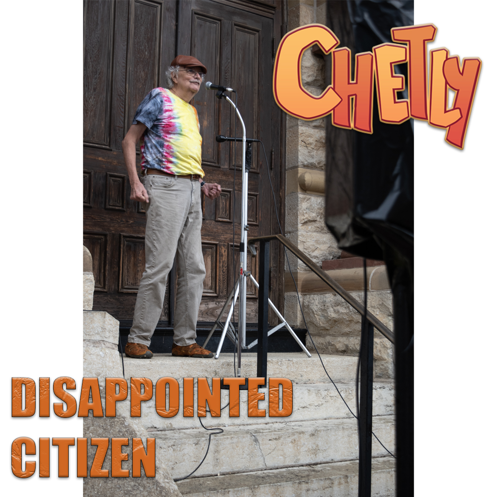
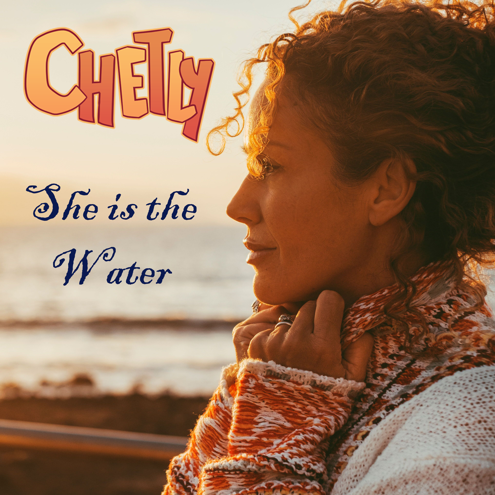
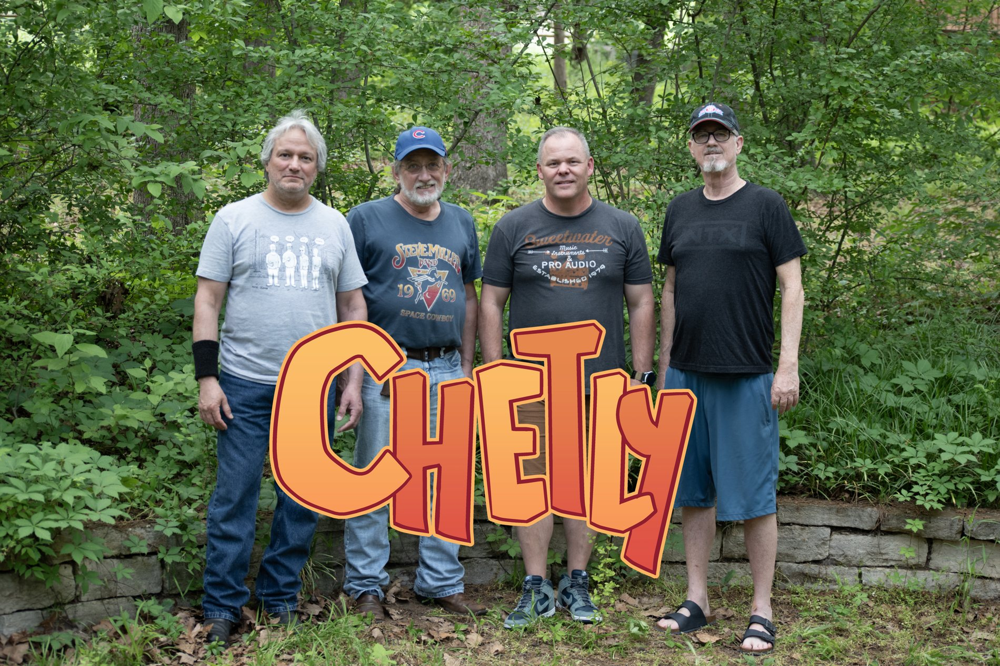
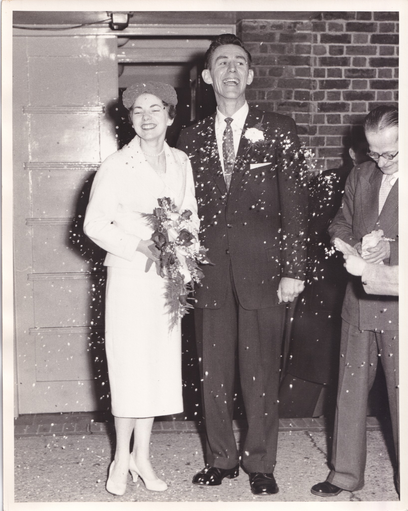

FRIDAY · OCT 16
Disappointed Citizen
The first single from Chetly.
OUT NOW
A little rock & roll, a little reflection, and a lot of life in between. The debut album is available now.
Featuring Disappointed Citizen · She Is The Water · and nine more tracks
All 11 tracks, right here. Open any song for its story, lyrics, recording credits and links to earlier versions.
A country watches its potential slip away, one bad decision at a time. Equal parts frustration and disbelief, this is a song about the future we could have had—and the bill we’re leaving for the next generation.
On the Brink, State Unknown Fingers Crossed, Face of Stone Nightly News, Makes you Spin Disappointed Citizen A Dozen Years of Stupidity It’s a Wonder We Survived at All It’s not Over, Till it’s Over No One Thought That Rome Could Fall Disappointed Citizen, It’s not Your Fault Disappointed Citizen, Like it or Not They Say That You Can Never Go Home Never Been, Truer than Today Too much Damage, to Repair The Next Generation’s Gunna Pay Disappointed Citizen, It’s not Your Fault Disappointed Citizen, Like it or Not What’s so Hard… is Knowing How Good It Could Have Been If Only Those…Who Didn’t Know Could Trust Those that Did Disappointed Citizen, It’s not Your Fault Disappointed Citizen, Like it or Not
Vocals – Jack Pier; Guitars – Vic Ramirez; Bass – Dave Jobes; Drums – Jon Beezley
© 2026 Jack Leonard Pier
Cornfields, Notre Dame, cold autumns, and a place where nobody seems to be in a hurry. A fond look back at the Midwest, where the days last a little longer—even if the corn doesn’t really grow twenty feet tall.
First released on Jack Pier’s 2018 EP Happier Day. This is a new Chetly version. Listen to the original 2018 recording ↗
Back in Indiana… Back in Indiana Back in Indiana… Back in Indiana Where the Corn Grows Twenty Feet Tall Notre Dame, Basketball Where the Weather gets Cold In the Fall Back in Indiana… Back in Indiana Back in Indiana… Back in Indiana Where they Don’t Walk So Fast Where they Make, the Day Last Just Like, They Did It In the Past Back in Indiana… Back in Indiana Back in Indiana… Back in Indiana
Vocals – Jack Pier; Guitars – Vic Ramirez; Bass – Dave Jobes; Drums – Jon Beezley
© 2026 Jack Leonard Pier
She moves like water, shaping everything around her without ever surrendering her freedom. A love song about appreciating what sustains us—and understanding that the tighter you hold on, the more likely it is to slip away.
My Lady Runs down From the Mountains Cross the Hills and Flowing Free Cross the Wide and Open Prairie My Lady Runs to the Sea Now you see, She is the Water Sustains Life, Gives Love to Me Shapes her World, and All Around Her Lays me down, Like an Ocean Breeze Hold that Water Gently Cupped up to the Light By Force it will Escape You Leave you Alone and Bone Dry Hold that Water Gently Cupped up to the Light By Force she will Escape You Leave you Alone and Bone Dry My Lady Runs Down from the Mountains My Lady Runs Down to the Sea Shapes her World, and All Around Her Lays me down, Like an Ocean Breeze
Vocals, Acoustic Guitar, Bass Guitar – Dave Jobes; Electric Guitar – Vic Ramirez; Drums – Jon Beezley
© 2026 DokturDave
Some things can’t be put back together, no matter how much glue you use. A song about accepting what’s broken, letting go of yesterday, and finding the courage—or at least the directions—to take another road.
What Once Was… Is No More Not the Way… It was Before Just Because… You Glue it Together Doesn’t Make it Whole… It won’t last Forever Through all the Pain and the Sorrow You Know there’s a New Day Tomorrow Can’t Change what’s happened Already Time to find a New Path to Follow Time to find a New Path to Follow Time to find a New Path to Follow Time to find a New Path to Follow I can’t Remember… A Quiet Day Maybe 2014… I can’t really Say The Future is Hiding Between the Past and Present Now you Question If I’m a Legal Resident Time to find a New Path to Follow Time to find a New Path to Follow Time to find a New Path to Follow Time to find a New Path to Follow
Vocals & Guitar – Jack Pier; Guitar – Vic Ramirez; Bass – Dave Jobes; Drums – Jon Beezley
© 2026 Jack Leonard Pier
A little rain, a little sunshine, passing cars, and people going nowhere in particular. One observer takes it all in, wondering whether anyone really knows what they’re doing. Apparently, nobody does.
Boulevard Walkabout… Try to Find the Words To Describe the Way I Feel… No Matter how Absurd Old Cars, New Cars… Driving Straight Ahead They don’t See me Sitting Here… Don’t know if I’m Dead I can See… the Light Trying to Shine Through I can See… No One knows What to Do I can See… the Light Trying to Shine Through Drizzle Day… Watch the drops come Floating Down They don’t make me Happy… they don’t make me Frown Dark Clouds from the East… Fighting with the Sunny West I just like the Contrast… Don’t know which is Best Sidewalk Conversations, Do I have to Shoot the Breeze Joggers running by who don’t Care… if they Freeze Who can say when Life is Right… And you don’t have to Try No More When the Game ain’t over And you Don’t Even Know the Score I can See… Light Trying to Shine Through I can See… No One Knows What to Do I can See… Light Trying to Shine Through I can See… No One Knows What to Do What to do…
Vocals & Guitar – Jack Pier; Guitars – Vic Ramirez; Bass – Dave Jobes; Drums – Jon Beezley
© 2026 Jack Leonard Pier
Forty-plus years, countless songs, a day job, a family, and a guitar that never quite got put away. The story of a songwriter still chasing the possibility that one of those songs might outlive him. The clock’s ticking, but he’s still strumming.
Wrote his first Song in ‘81 When He was Nineteen years Old Wasn’t Quite Good Enough Is what He was Told Wasn’t Worried About The Money Had a Day Job Went to Work each Day Two Kids, A Family It was, a Small Price to Pay Lost in Lists that Drive the Hits Swimming in a Sea of No Bodies Never Knowing, Where he Fits Or if He’s even Good Enough to Exist He Thought That Some Day He’d Make his Mark Ten, Twenty, Thirty Years of Strumming, Strumming that Guitar Figured He had it Comin The Practice would Take Him Far Take Him Far Take Him Far Take Him Far The Band had Faith, there Was a Chance Deep Down they knew there was No Time to Waste Hit Record and Play until we Dig the Sound A Dozen Mixes, to Find the Taste Now he’s on the Home Stretch Odds are Stacked, Pretty High Try to hit the Ball on the Fairway Then hit it, where it lie Will it all… Be for Naught? Can he write a song that won’t be forgot? Clock keeps Tickin, Years roll by Too Old to Make it. To Young to Die. He Thought That Some Day He’d make His Mark Ten, Twenty, Thirty Years of Strumming, Strumming that Guitar Figured He had it Comin The Practice would Take Him Far Take Him Far
Vocals & Acoustic Guitar – Jack Pier; Electric Guitars – Vic Ramirez; Bass – Dave Jobes; Drums – Jon Beezley
© 2026 Jack Leonard Pier
Fallen arches, fractured feelings, and a lifetime of unanswered questions. Getting older may bring a few aches and disappointments, but it also brings perspective. Not young anymore—and not finished yet.
First released on Jack Pier’s 2018 EP Happier Day. This is a new Chetly version. Listen to the original 2018 recording ↗
Fallen Arches, Fallen from Grace April Marches, Keep up the Pace Fractured Feelings, Unknown Knowledge No Respect, Eight Years of College Sunken Sunlight, Gone till Dawn Lingering Doubts, All Confidence Gone Darkness Dies, Like Everyone Morning Born, For all but One Summer Salt, Ocean Spray Unsatisfied, at the End of the Day Long Shadows, Blinded Horizon Too Dark, To Keep Your Spare Eyes On Sunken Sunlight, Gone till Dawn Lingering Doubts, All Confidence Gone Darkness Dies, Like Everyone Morning Born, For all but One Sandy Trek, Down a Rocky Coast Un-compared Pain, Hurts the Most Missing Parts, Stall the Progress False Starts, Douse the Congress Sunken Sunlight, Gone till Dawn Lingering Doubts, All Confidence Gone Darkness Dies, Like Everyone Have no Fear, I’m Not That Young I’m Not That Young I’m Not That Young I’m Not That Young I’m Not That Young
Vocals & Guitar – Jack Pier; Guitars – Vic Ramirez; Bass – Dave Jobes; Drums – Jon Beezley
© 2026 Jack Leonard Pier
We spend our lives making plans, collecting memories, and trying to leave something behind. Then life reminds us who’s really in charge. You’re the skipper, all right—just don’t expect the boat to follow orders.
I’ve seen the Sun Rise in the East And I’ve seen it Set in the West Here Today, Gone Tomorrow Try to leave a Mark Best Intentions, Somehow Hollow You’re the Skipper of a Boat – That you Can’t Row You Can’t Row Left with Memories No One will Remember Saved to a Cloud, No One will Visit January to December Not what you Pictured. - Is it? What was so Important Isn’t Worth the Time Today Wasted Hours watching Talking Heads Say the Weather’s Sunny When you Feel the Rain Here Today, Gone Tomorrow Try to leave a Mark Best Intentions, Somehow Hollow You’re the Skipper of a Boat – That you Can’t Row You Can’t Row
Vocals – Jack Pier; Guitar – Vic Ramirez; Bass & Piano – Dave Jobes; Drums – Jon Beezley
© 2026 Jack Leonard Pier
A relationship ends, but the little reminders stick around—even in the records you can’t bring yourself to play anymore. A bittersweet song about missing someone without blaming them for leaving, and remembering when things were better.
First released on Jack Pier’s 2018 EP Happier Day. This is a new Chetly version. Listen to the original 2018 recording ↗
I don’t wake up with you on my Mind I don’t plan my Day Around You I don’t have anyone to fill The Shell You Left Behind I don’t have my Arms Around You Happier Day Happier Day Happier Day Happier Day I don’t ever knock on your Front Door I would not Know what to Say I don’t ever play Centro-Matic no More They remind me of a Happier Day Happier Day Happier Day Happier Day Happier Day I don’t know what you got on your Mind You took off and left me Far Behind I know it was Something That… You just had to do I don’t have heart or The Right to Blame You Happier Day Happier Day Happier Day Happier Day Happier Day, Doo Doot Doo Happier Day, Doo Doot Doo Happier Day, Doo Doot Doo Happier Day, Doo Doot Doo
Vocals & Guitar – Jack Pier; Guitars – Vic Ramirez; Bass – Dave Jobes; Drums – Jon Beezley
© 2026 Jack Leonard Pier
Originally released as a single in 2024, this remixed album version delivers a pointed political broadside about abandoned principles, misplaced loyalties, and a party seemingly determined to write its own obituary.
Remixed from the original 2024 single.
Reagan would Roll Over In his Presidential Grave If he had to Witness How his Party Behaves He said “Tear Down That Wall” Not Bail on NATO At Putin’s Beck and Call Tell me it Ain’t So Doomed to Failure and a Bluer Future Doomed to Failure and a Bluer Future Doomed to Failure and a Bluer Future Doomed to Failure and a Bluer Future What the Hell are they Thinkin? Up on that Hill Too Scared of the Orange Monster They lost, All their Free Will Now they’re Stuck in a Hole They Can’t Climb Out Of The GOP is DOA Time is Up, It’s Time to Pay Doomed to Failure and a Bluer Future Doomed to Failure and a Bluer Future Doomed to Failure and a Bluer Future Doomed to Failure and a Bluer Future How many Times Do ya have to Lose? Before you Take the Offer The one that you Can’t Refuse It’s got to make you Wonder You Can’t support, the Brave men in Blue Then Pardon J6 Traders – Both Can’t be True Time to take your Lumps And Start the Party Over You had your Chance, And know you’re so much Older Doomed to Failure and a Bluer Future Doomed to Failure and a Bluer Future Doomed to Failure and a Bluer Future Doomed to Failure and a Bluer Future
Vocals & Guitar – Jack Pier; Bass – Justin Alvarez; Drums – Jon Beezley
© 2024, 2026 Jack Leonard Pier
A remix of the 2024 instrumental single. No lyrics, no speeches, no explanations. Just guitar, bass, and drums delivering the final word. Sometimes an instrumental says everything it needs to say with its title.
Remixed from the original 2024 single.
Instrumental — No Lyrics
Guitar – Jack Pier; Bass – Justin Alvarez; Drums – Jon Beezley
© 2024, 2026 Jack Leonard Pier
Produced by: Jack Pier
Mixing & Mastering: Michael Briggs
Recorded in: Southlake, Texas
Special thanks: Stephen Wright, Jessie Frye, Chris Welch, Alex Bhore, Tim DeLaughter, Brent Best, John Ondrasik, Tim Chapman, Rusty Deutch, Loey, Jerry O’Neil.
The singles and the full 11-song debut album are available on Bandcamp.

The first single from Chetly.
OUT NOW
The second single from Chetly.
OUT NOWThe full eleven-track debut album.
OUT NOWTwo official YouTube Shorts. Select a video to play—nothing starts automatically.

Chetly is an alternative rock band from Southlake, Texas. Our debut brings together eleven songs, years of playing, and a shared love of making music.
Jack Pier · Dave Jobes · Vic Ramirez · Jon Beezley

Before it was a band name, Chetly was a nickname. It belonged to Chester, Jack's father. The couple on the album cover are Chester and his wife Shirley, pictured at the beginning of a new chapter in their lives.
It's a small piece of the story behind the record — and a nod to the people and journeys that stay with us.